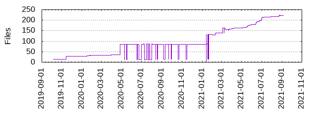

Files
- Total files
- 222
- Total lines
- 38635
- Average file size
- 16989.43 bytes

| Extension | Files (%) | Lines (%) | Lines/file |
|---|
| 8 (3.60%) | 959 (2.48%) | 119 |
| conf | 1 (0.45%) | 1 (0.00%) | 1 |
| css | 3 (1.35%) | 234 (0.61%) | 78 |
| enc | 2 (0.90%) | 16 (0.04%) | 8 |
| html | 3 (1.35%) | 361 (0.93%) | 120 |
| in | 1 (0.45%) | 8 (0.02%) | 8 |
| ini | 2 (0.90%) | 66 (0.17%) | 33 |
| ipynb | 11 (4.95%) | 12359 (31.99%) | 1123 |
| jinja | 1 (0.45%) | 9 (0.02%) | 9 |
| lp | 6 (2.70%) | 93 (0.24%) | 15 |
| md | 7 (3.15%) | 546 (1.41%) | 78 |
| png | 11 (4.95%) | 5646 (14.61%) | 513 |
| py | 117 (52.70%) | 22487 (58.20%) | 192 |
| rst | 14 (6.31%) | 311 (0.80%) | 22 |
| sh | 3 (1.35%) | 154 (0.40%) | 51 |
| toml | 1 (0.45%) | 3 (0.01%) | 3 |
| txt | 5 (2.25%) | 235 (0.61%) | 47 |
| yaml | 19 (8.56%) | 212 (0.55%) | 11 |
| yml | 7 (3.15%) | 583 (1.51%) | 83 |